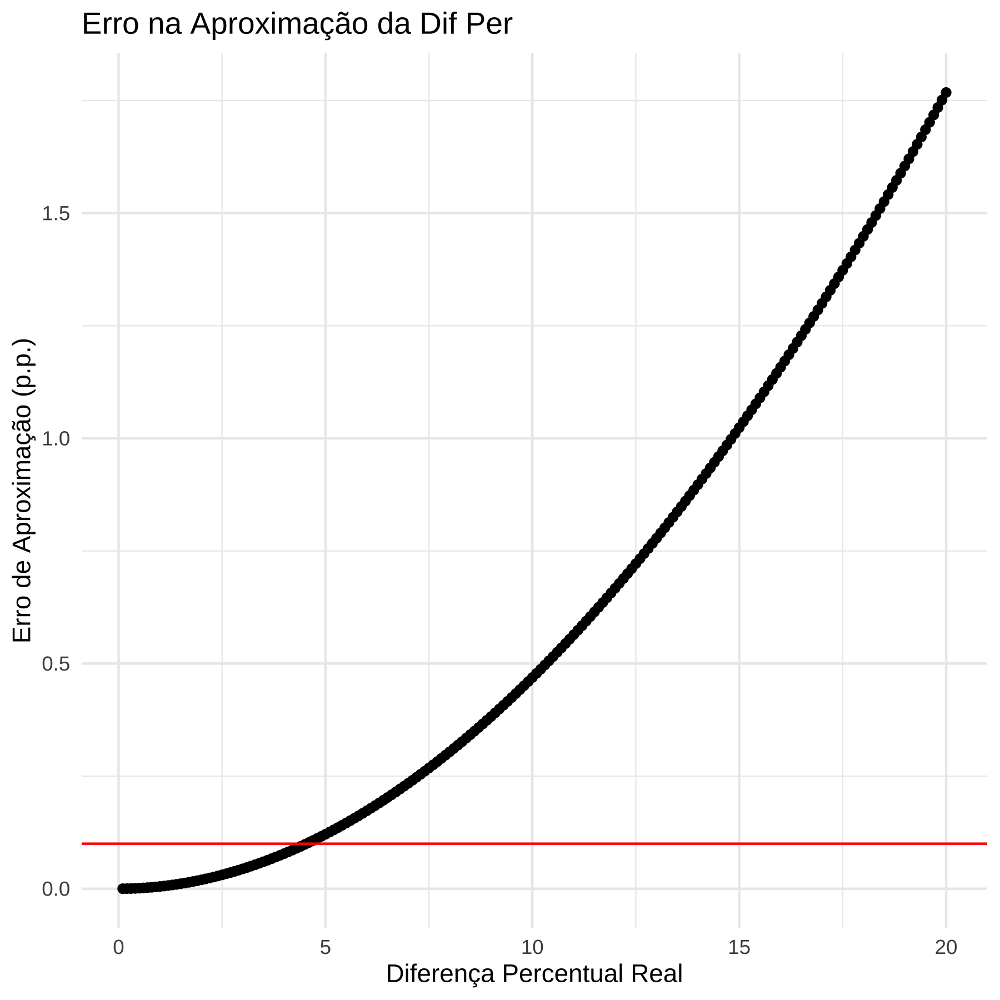

Capítulo 5 O Modelo de Regressão
“Prediction is hard. Specially about the future”. Fonte desconhecida.
5.1 Modelo de Regressão - Teoria
O modelo de regressão (não confundir com regressão linear) é uma forma bem ampla de modelar os dados para prever uma variável de interesse, usualmente designada pela letra \(Y\). Se eu quero prever os votos de candidatas em uma eleição, a votação de cada candidata é minha variável de interesse, \(Y\). Digamos que eu tenho uma amostra da intenção de votos das candidatas, obtidas por meio de uma pesquisa eleitoral. Então, a regressão é uma forma de modelar os dados para prever justamente essa variável \(Y\).
Antes de entrarmos em Regressão, vale a pena repassar a nomenclatura básica sobre \(Y\) e \(X\).
| VD | VI |
|---|---|
| Variável Resposta | Variável Preditora |
| Variável Explicada | Variável Explicativa |
| Variável Predita | Variável de Entrada |
| Variável de Saída | Variável Exógena |
| Variável Regredida | Regressor |
| Regressando | Covariável |
Uma das primeiras distinções que temos de fazer é sobre previsão e explicação (causal). Quando queremos prever, estamos interessados em saber quais os provaveis valores de variáveis no futuro, a parte de informações sobre a própria variável e outras no passado. Nesse sentido, é preciso algum tipo de suposição de que o futuro se assemelha ao passado de algum modo. Esse tipo de suposição usualmente toma a forma de um modelo probabilísitco, mas não apenas.
Quando estamos interessados em explicações causais, temos dois tipos de perguntas de pesquisa possíveis. Uma sobre a chamada causa dos efeitos e outra sobre o efeito das causas (Gelman & Imbens, 2013). A causa dos efeitos são perguntas do tipo: o que causal a II Grande Guerra? Ou qual a causa da eleição de Trump ou Bolsonaro? O que explica a desigualdade de renda no Brasil? São todas perguntas em que queremos explicar um efeito, isto é, identificar as causas de um fenômeno (efeito). Já o efeito das causas ão perguntas do tipo: qual o efeito da vacina de covid-19 sobre a mortalidade por Covid-19? Qual o efeito de checagem de notícias sobre a crença de pessoas em desinformação? Qual o efeito da magnitude eleitoral sobre fragmentação partidária? E assim por diante. Aqui, estamos interessados em entender o efeito causal de uma variável sobre outra, sem pretender esgotar todas as explicações de causa possíveis.
A maior parte dos métodos quantitativos existentes são bons para responder perguntas de previsão e de causa dos efeitos. Grosso modo, não há método quantitativo para estimação do efeito das causas, exceto realizar uma série de estudos independentes sobre várias causas dos efeitos, olhando uma causa distinta do mesmo efeito por vez e esperar que isso gere um conhecimento combinado sobre essas múltiplas causas. Mas não há, contudo, uma metodologia bem definida de como combinar esses estudos independentes em um único conhecimento do efeito conjunto das causas.
Assim, nosso curso será dedicado apenas a modelos de previsão e modelos de causa dos efeitos, que é o que temos de metodologias já desenvolvidas e consolidadas. Começamos por essa explicação porque uma perspectiva mais antiga, e ainda comum nas ciências sociais, é que modelos de regressão múltiplas permitem estimar o efeito de várias causas. Isso raramente é o caso e não adotaremos essa perspecitva aqui 1.
Há muitas formas de apresentar ou motivar regressão linear. O método mais tradicional é pensar que a regressão linear é uma reta que é ajustada aos pontos observados. Porém, não tomaremos esse caminho aqui.
Nós iremos considerar que a regressão linear é uma forma de aproximar a chamada “Conditional Regression Function” (CEF, na sigla em inglês). O objetivo é entender “as far as possible with the available data how the conditional distribution of some response \(y\) varies across subpopulations determined by the possible values of the predictor or predictors” (Cook and Weisberg, apud Berk, p. 4).
5.2 CEF
Para introduzir a CEF, iremos trabalhar com um banco de dados de eleição. O código abaixo mostrar como importar e processar os dados. O dado original foi retirado do portal de dados abertos do TSE, com os dados de votação nominal nas eleições de 2020 para o estado de São Paulo.
library(here)
library(data.table)
library(tidyverse)
# Importando os dados desejados
# dados <- fread(here("dados\\votacao_secao_2020_SP\\", "votacao_secao_2020_SP.csv"), encoding = "Latin-1")# dados_finais <- dados %>%
# dplyr::filter(DS_CARGO == "Prefeito" & ANO_ELEICAO == 2020 & NM_TIPO_ELEICAO == "Eleição Ordinária") %>%
# group_by(DS_ELEICAO, NR_TURNO, NM_MUNICIPIO,
# NR_ZONA, NR_SECAO, NR_VOTAVEL) %>%
# summarise(votos_nominais = sum(QT_VOTOS))
# saveRDS(dados_finais, file=here("dados\\", "dados_finais.rds"))
#salvei os dados e posso importar o que fiz.
# o arquivo dados_finais.rds está no respositório em:
# https://github.com/mgaldino/book-regression/tree/main/dados
dados_finais <- readRDS(here("dados", "dados_finais.rds"))
# Identificar os municípios que possuem segundo turno
municipios_segundo_turno <- dados_finais %>%
ungroup() %>%
filter(NR_TURNO == 2) %>%
dplyr::select(NM_MUNICIPIO) %>%
distinct()
# Filtrar os dados para incluir apenas os municípios que têm segundo turno
dados_filtrados <- dados_finais %>%
ungroup() %>%
inner_join(municipios_segundo_turno, by = "NM_MUNICIPIO")
dados_turno <- dados_filtrados %>%
filter(!NR_VOTAVEL %in% c(95, 96)) %>% # nulos e brancos fora
pivot_wider(
id_cols = c(DS_ELEICAO, NM_MUNICIPIO, NR_ZONA, NR_SECAO, NR_VOTAVEL),
names_from = NR_TURNO,
values_from = votos_nominais,
names_prefix = "votos_turno_"
) %>%
rename(votos_1turno = votos_turno_1,
votos_2turno = votos_turno_2)
dados_turno1 <- dados_turno %>%
group_by(NR_VOTAVEL, NM_MUNICIPIO) %>%
mutate(voto_total_candidato_2t = sum(votos_2turno, na.rm=T),
voto_total_candidato_1t = sum(votos_1turno, na.rm=T)) %>%
ungroup() %>%
group_by(NM_MUNICIPIO, NR_ZONA, NR_SECAO) %>%
mutate(votos_validos_1t = sum(votos_1turno),
votos_validos_2t = sum(votos_2turno, na.rm=T)) %>%
filter(voto_total_candidato_2t > 0) %>%
group_by(NM_MUNICIPIO, NR_ZONA, NR_SECAO, NR_VOTAVEL) %>%
mutate(perc_validos_1t = votos_1turno/votos_validos_1t,
perc_validos_2t = votos_2turno/votos_validos_2t) %>%
ungroup()
# salvando dados que iremos trabalhar em sala de aula efetivamente.
saveRDS(dados_turno1, file=here("Dados//", "dados_turno1.rds"))O que constitui uma boa previsão? Tradicionalmente, empregamos a noção de Erro Quadrátco Médio (EQM) para quantificar boas previsões. Quanto menor o EQM, melhor uma previsão. Se o objetivo é, portanto, fazer previsões que minimizem o EQM, iremos apresertar e mostrar que a Função de Esperança Condicional (CEF, na sigla em inglês) é o melhor preditor global possível. Vamos dizer, em outras palavras, porque esse resultado é verdadeiramente incrível. A CEF é o melhor preditor possível dentre todos que existam ou possam vir a existir, entendendo melhor como ter o menor EQM. Por isso que a CEF é o ponto de partida de qualquer preditor que exista, seja uma regressão simples ou algoritmos de aprendizens de máquinas como “random forest” ou mesmo algorítimos de deep learning de redes neurais por traz dos recentes avanços na inteligência artificial.
Mesmo os algorítmos mais avançados de inteleigência artificial, como os Large Language Models, que estão na base de ferramentas como ChatGPT, não podem ter desempenho melhor que a função de experança condicional, CEF, ao fazer uma previsão.
Naturalmente, se esse é o caso, a próxima pergunta que todos nós iremos fazer é: por que não aprender apenas a usar a CEF, que é o melhor preditor possível, e ser feliz para sempre? Porque a natureza não nos diz qual é a CEF. Nós nunca sabemos qual a verdadeira função de esperança condicional. Então tentamos aproximar o mais bem possível a CEF, a partir de simplificações da realidade. Em particular, nosso curso pode ser pensado em torno das seguintes perguntas: como aproximar a CEF por meio de regressão linear (combinação lineares de preditores)? Quais as propridades dessa aproximação? Em que condições ela é uma boa aproximação e em que sentido (quantitativo e preciso) podemos falar de boa aproximação? Mais para o final do curso faremos a conexão entre a CEF, modelos preditivos e modelos causais.
5.3 CEF e voto
library(ggplot2)
library(tidyr)
p1 <- dados_turno1 %>%
ggplot(aes(x=perc_validos_1t , y = perc_validos_2t )) + geom_point() + theme_bw(base_size = 22) +
scale_x_continuous(labels = scales::percent) +
scale_y_continuous(labels = scales::percent)
print(p1)
(#fig:voto_turnos_todos_municipios cap5)voto
O gráfico agrupando todos os munícipios de São Paulo sem distinção mostra uma correlação positiva, mas muita variabilidade. Vamos ver por município.
p2 <- dados_turno1 %>%
ggplot(aes(x=perc_validos_1t , y = perc_validos_2t )) + geom_point() + theme_bw(base_size = 22) +
facet_wrap(~ NM_MUNICIPIO) +
scale_x_continuous(labels = scales::percent) +
scale_y_continuous(labels = scales::percent)
print(p2)
(#fig:voto_turnos_por_municipios)voto_por_municipio
Os gráficos fazem mais sentido e a variabilidade diminuiu no geral, mas alguns municípios estão com padrões estranhos. Vamos colorir os pontos por candidato?
p3 <- dados_turno1 %>%
ggplot(aes(x=perc_validos_1t , y = perc_validos_2t, colour = NR_VOTAVEL)) + geom_point() + theme_bw(base_size = 22) +
facet_wrap(~ NM_MUNICIPIO) +
scale_x_continuous(labels = scales::percent) +
scale_y_continuous(labels = scales::percent) +
theme(legend.position="none")
print(p3)(#fig:voto_turnos_por_municipios_candidatos)voto_por_municipio
Municípios como Diadema, Sorocaba, Franca e Taubaté, que não estavam fazendo muito sentido, agora passaram a fazer.
E o que é a Esperana Condicional? Qual o valor esperado do \(Y\) para um davo valor de \(X\). No gráfico, é dado pela linha vermelha.
5.4 Algumas Propriedades da CEF
A CEF é simplesmente uma função de \(X_i\) que resulta na esperança condficional, ou seja \(\mathbb{E}[Y_i|X_i]\). É como se eu escrevesse \(f(X_i) = \mathbb{E}[Y_i|X_i]\).
Como \(X_i\) pode ser pensado como aleatório, então a CEF também é aleatória.
Nós podemos descrever os dados da seguinte forma: \(Y_i = \mathbb{E}[Y_i|X_i] + e_i\). Ou seja, a Esperança condicional mais um termo de erro. Nós veremos que é possível mostrar que \(\mathbb{E}[e_i|X_i] = 0\), ou seja, independência na média.
5.4.1 CEF é a melhor aproximação aos dados
Suponha que estamos interessados em achar a melhor função de \(X\), \(m(x)\) que aproximada os dados \(Y\). Qual seria essa função? Se nós utilizamos o EQM para computar quão bem estamos aproximando os dados, então:
\((Y_i - m(X_i))^2 = ((Y_i - \mathbb{E}[Y_i|X_i]) + (\mathbb{E}[Y_i|X_i] - m(X_i)))^2\)
\((Y_i - m(X_i))^2 = (Y_i - \mathbb{E}[Y_i|X_i])^2 + 2(Y_i - \mathbb{E}[Y_i|X_i])(\mathbb{E}[Y_i|X_i] - m(X_i) + (\mathbb{E}[Y_i|X_i] - m(X_i))^2\)
Nós queremos minimizar a esperança do erro quadrático, isto é, achar \(m(X_i)\) que torna o EQM mínimo. Logo, sabemos que qulquer que seja o \(m(X_i)\) que minimiza o EQM, não impacta o primeiro termo da equação acima, de forma que podemos desconsiderá-lo. \(Y_i - \mathbb{E}[Y_i|X_i]\) é \(e_i\). Como a esperança de \(e_i\) é zero, então todo o termo é zero. De forma que só sobra a esperança do último termo. E o melhor que se pode fazer é zerar o termo, ou seja, \(m(X_i) = \mathbb{E}[Y_i|X_i]\).
5.5 Regressão Linear
Como podemos ver nos gráficos, a esperança condicional é em geral não-linear. A ideia da regressão linear é aproximar a CEF por meio de uma reta.
Vamos plotar a reta de regressão linear nos gráficos, juntamente com a CEF.
# Criar o gráfico
grafico_cef_reg <- ggplot() +
geom_point(data = dados_binned, aes(x = perc_validos_1t, y = perc_validos_2t),
alpha = 0.3, color = "gray") +
geom_point(data = cef_data, aes(x = bin_center, y = perc_validos_2t_mean),
color = "red", size = 2) +
geom_line(data = cef_data, aes(x = bin_center, y = perc_validos_2t_mean),
color = "blue") +
geom_smooth(data = dados_binned, aes(x = perc_validos_1t, y = perc_validos_2t), colour = "black",linewidth=1, method="lm", se=FALSE) +
facet_wrap(~NM_MUNICIPIO) +
labs(title = "CEF e Reta de Regressão Linear",
x = "Percentual de Votos Válidos no 1º Turno",
y = "Percentual Médio de Votos Válidos no 2º Turno") +
theme_minimal() +
scale_x_continuous(limits = c(0, 1), labels = scales::percent) +
scale_y_continuous(limits = c(0, 1), labels = scales::percent)
print(grafico_cef_reg)(#fig:CEF_voto_turnos_regressao)voto_por_municipio
5.6 Logaritmos
É muito comum a utilização de logaritmos em regressões, de modo que vale uma digresssão sobre a correta interpretação de logaritmos. A primeira razão é que a diferença de logaritmos é aproximadamente igual à diferença entre porcentagens. Vamos ilustrar isso por meio de um exemplo, e então mostaremos matematicamente que isso sempre é o caso.
5.6.1 Logartimos como diferença de porcentagens
De acodo com dados da PNADc de 2017, quarto trimstre, o salário por hora dos homens é em média \(14.72\) reais, e o das mulheres \(12.57\) reais. A diferença percentual no salário é, portanto, \(100*(14.72 - 12.57)/12.57\) ou \(17,1%\). Se em vez de calcular a diferença percentual, usar a aproximação \(log(14.72) - log(12.57) = 0.1578941\) ou 15,8%, tenho um valor próximo do verdadeiro valor de 17,1%.
O caso geral pode ser visto do seguinte modo. Sejam dois números positivos \(a\) e \(b\), com \(a > b\). A diferença percentual \(p\) entre \(a\) e \(b\) é dada por:
\[ 100*(a - b)/b = p \] Que é o mesmo que:
\[ a/b = 1 + p/100 \] Se passarmos o logaritmo natural de ambos os lados, temos:
\[ log(a/b) = log(1 + p/100) \] \[ log(a) - log(b) = log(1 + p/100) \] Iremos usar a aproximação \(log( 1 + x) \approx x\) para \(x\) pequeno. Logo:
\[ log(a) - log(b) \approx p/100 \] Numericamente, como o erro dessa aproximação varia para diferentes valores de \(p\)?
Exercício em sala: Vamos fazer uma simulação para verificar como o erro da aproximação funciona. Ou seja, vamos variar a diferença percentual entre dois números \(a\) e \(b\) e calcular o erro de aproximação pela fórmula com logaritmo.
dif_perc <- function(a,b){
stopifnot(a > b)
100*(a - b)/b
}
aprox_dif_perc <- function(a,b){
stopifnot(a > b)
100*(log(a) - log(b))
}
erro_aprox_perc <- function(a,b) {
dif_perc(a,b) - aprox_dif_perc(a,b)
}
b <- 100
a <- seq(100.1, 120, by=.1)
vec_erro <- numeric()
true_p <- numeric()
for ( i in 1:length(a)) {
vec_erro[i] <- erro_aprox_perc(a[i],b)
true_p[i] <- dif_perc(a[i],b)
}
df <- data.frame(erro = vec_erro, p = true_p )
library(ggplot2)
library(tidyverse)
df %>%
ggplot(aes(x=p, y=erro)) + geom_point() +
geom_hline(yintercept = .1, colour= "red") +
labs(x = "Diferença Percentual Real",
y = "Erro de Aproximação (p.p.)",
title = "Erro na Aproximação da Dif Per") +
theme_minimal()
# Verificação do intervalo onde o erro é menor que 0.1 pp
df$within_tolerance <- abs(df$erro) < 0.1
max_p_within_tolerance <- max(df$p[df$within_tolerance])
print(paste("Máximo p com erro < 0.1 pp:", round(max_p_within_tolerance, 2)))## [1] "Máximo p com erro < 0.1 pp: 4.5"A segunda razão é que se aplicarmos essa lógica para médias, estamos aproximando a diferença percentual na média geométrica.
5.6.2 Logaritmos e média geométrica
A média geométrica de um conjunto de observações \((x_1, x_2, \cdots, x_n)\) é dada por: \(MG = \sqrt[n]{(x_1 \cdot x_2 \cdot x_n)}\).
Se considerarmos variáveis aleatórias, \(X\) e \(Y\), ambas positivas, e suas respectivas transformações com logaritmo, \(log(X)\) e \(log(Y)\), definimos a média geométrica \(\theta_x = \exp(\mathbb{E}[log(X)])\) e \(\theta_y = \exp(\mathbb{E}[log(Y)])\) e a diferença percentual como:
\(p = 100\frac{(\theta_y - \theta_x)}{\theta_x}\)
A diferença na esperança da transformações do log é:
\(100(\mathbb{E}[log Y] - \mathbb{E}[log X]) = 100 (log \theta_y - log \theta_x) \approx p\)
Em paavras: A diferença na média de variáveis transformadas (pelo log) é aproximadamente a diferença percentual nas médias geométricas. Isso é relevante por causa do seguinte. Suponha que temos o logaritmo do salário de homens e mulheres:
\(\mathbb{E}[Y|homem] =\mu_1\) \(\mathbb{E}[Y|mulher] =\mu_2\)
Podemos dizer que a diferença \(\mu_2 - \mu_1\) é aproximadamente a diferença percentual na média geométrica.
5.7 Prevendo a partir da esperança condicional
No gráfico abaixo, as esperanças condicionais para os dois valores de \(X\) são dadas pelos triângulos vermelhos. Como vemos, há uma grande variabilidade nos dados de salário em torno da esperança condicional. Isso significa que se só tenho a variável gênero, prever \(Y\) a partir da esperança condicional \(\mathbb{E}[Y|X]\) resulta em um erro grande.
De fato, o erro que cometemos pode ser calculado por meio do Erro Quadrático Médio, que é definido como a soma dos erros ao quadrado (para não cancelar). No R, isso pode ser calculado como:
#
# df_erro <- df %>%
# group_by(genero) %>%
# mutate(cond_exp = mean(log_salario)) %>%
# ungroup() %>%
# mutate(erro = log_salario - cond_exp)
#
# df_erro %>%
# select(log_salario, genero, cond_exp, erro) %>%
# head() %>%
# kable()
#
# df_erro %>%
# summarise(eq = round(sum(erro),4),
# eqm = sum(erro^2)) %>%
# kable()Como iremos mostrar depois, não existe nenhuma outra forma melhor de prever \(Y\), se só tivermos informação de \(Y\) e \(X\). Ou seja, esse é o menor erro quadrático médio possível. Claro que, com mais variávels, podemos condicionais em mais informação e melhorar a previsão. Por exemplo, se temos a variável raça, além de gênero, podemos condicionar nas duas variáveis.
Vemos que o EQM diminuiu ao condicionar em mais variáveis. Para reforçar, até aqui estamos falando da população. Embora no exemplo tenhamos dados da PNAD, que é uma amostra, e em teoria deveríamos trabalhar com o censo, estou simplificando e assumindo que a PNAD representa a população. Fazendo essa suposição, o erro que é cometido pela esperança condicional para prever \(Y\) é o menor erro (quantificado pelo EQM) possível (iremos demonstrar isso no próximo capítulo).
5.8 Preditores lineares
Como vimos, uma boa aproximação para a CEF é um preditor linear. Se temos um preditor \(x\) e queremos usar esse preditor para prever \(y\), o modelo linear simples pode ser escrito da seguinte forma:
\[ \hat{y_i} = \alpha + \beta x_i \] Vejam que eu usei \(x_i\), mas não \(y_i\). Em vez disso, utilizei \(\hat{y}_i\). Este último valor é a minha previsão do \(y\) dado o valor do meu preditor \(x\) para cada observação \(i\). Vejam que, uma vez que nós saibamos os valores de \(\alpha\) e \(\beta\), temos efetivamente uma reta (linear) que relaciona \(x_i\) e \(\hat{y}_i\). Um critério para tal é minimizar a diferença, para cada observação, entre \(y\) e \(\hat{y}\), isto é:
\[ \min_{\mathbf{\alpha, \beta}}\sum_i^n (y_i - \hat{y}_i)^2 \] A notação fica mais simples com a esperança matemática: \[ \min_{\mathbf{\alpha, \beta}} \mathbb{E}[(Y - \hat{Y})^2] \] Por essa razão, chamamos de: preditor linear de erro quadrático médio mínimo.
Por hora, basta saber que se minimizarmos a soma (ou a esperança) obteremos os valores de \(\alpha\) e \(\beta\). Quando falamos de uma amostra (em vez da população), iremos indicar esses valores por \(\hat{\alpha}\) e \(\hat{\beta}\).
Essa previsão, por mais que nós estejamos tentando minimizar o erro entre o valor do \(y\) e previsto \(\hat{y}\), em geral não será perfeito. Assim, para cada previsão \(\hat{y}_i\) cometo um erro \(\epsilon_i\) que é a diferença entre o observado \(y\) e o precisto \(\hat{y}\), ou seja:
\[ \epsilon_i = y_i - \hat{y}_i \]
Se eu substituir \(\hat{y}_i\) pos sua equação, temos:
\[ \epsilon_i = y_i - \alpha - \beta x_i \]
Rearranjando: \[ y_i = \alpha + \beta x_i + \epsilon_i \] Esse é chamado de modelo de regressão linear. Em resumo, o preditor linear é \(\hat{y}_i = \alpha + \beta x_i\) e o modelo de regressão lienar é \(y_i = \alpha + \beta x_i + \epsilon_i\). No primeiro caso, tenho uma previsão que é diferente do observado. No segundo caso, acoplo a previsão ao erro e obtenho exatamente o observado.
Vale notar que minimizar a soma dos quadrados dos resíduos é o mesmo que minimizar a a raiz quadrada dessa soma dividida por \(n\), ou seja:
\[ \min_{\mathbf{\alpha, \beta}}\sum_i^n (y_i - \hat{y}_i)^2 = \min_{\mathbf{\alpha, \beta}} \sqrt{\frac{1}{n}\sum_i^n (y_i - \hat{y}_i)^2} \]
Essa soma com a raiz quadrada é chamada de erro raiz-quadrático médio (Root-Mean-Squared-Error ou RMSE em inglês). Vamos calcular no R um modelo de regressão linear e depois o RMSE de nossos dados.
Para rodar uma regressão no R, usamos a função lm(). Ela recebe a fórmula na forma \(y \sim x\), em que \(y\) é a variável resposta e \(x\) o preditor. Não é preciso escrever os coeficientes \(\alpha\) e \(\beta\). O R vai calcular eles pra gente e teremos estimativas amostrais \(\hat{\alpha}\) e \(\hat{\beta}\).
# vamos ficar só com o candidato mais votado
dados_filtrados <- dados_turno1 %>%
group_by(NM_MUNICIPIO) %>%
# calcula o valor máximo de votos no 2º turno por município
mutate(max_votos_2t = max(voto_total_candidato_2t, na.rm = TRUE)) %>%
# mantém apenas os candidatos que atingiram esse valor
filter(voto_total_candidato_2t == max_votos_2t) %>%
ungroup() %>%
dplyr::select(-max_votos_2t)
reg <- lm(perc_validos_2t ~ perc_validos_1t, data = dados_filtrados)
reg##
## Call:
## lm(formula = perc_validos_2t ~ perc_validos_1t, data = dados_filtrados)
##
## Coefficients:
## (Intercept) perc_validos_1t
## 0.3624 0.6597O resultado do modelo mostra que o intecepto (\(\hat{\alpha}\)) é \(0.3624\) e a inclinação (o \(\hat{\beta}\)) é 0.6597. O R não reporta o nome dos coeficientes \(\hat{\alpha}\) ou \(\hat{\beta}\) mas intercepto para o caso do \(\hat{\alpha}\) e o nome do preditor para o caso do \(\hat{\beta}\). E interpretamos esse resultado do seguinte modo: quando o preditor é zero, ou seja, quando o voto no primeiro turno do vencedor da eleição é zero naquela seção eleitoral, a previsão do modelo é que no segundo turno o candidato mais votado tem 36,24% dos votos na seção. E cada ponto percentual de voto na seção se traduz em \(.01*0.6597 = 0.006597\) pontos percentuais adicionais, ou seja, 1 ponto pecentual de voto na seção eleitoral se traduz em 0,6597 pontos percentuais. Em outras palavras, o candidato vencedor que teve 1% de voto numa seção eleitoral deve ter (é a previsão do modelo) \(0.3624 + .01*0.6597 = 0.368997\) ou aproximadamente 37% dos votos na seção. Similarmente, se esse candidato teve 10% dos votos naquela seção no primeiro turno, então a previsão é que tenha: \(0.3624 + .1*0.6597 = 0.42837\) ou aproximadamente 43% dos votos.
# vamos ficar só com o candidato mais votado
dados_filtrados %>%
ggplot(aes(y=perc_validos_2t, x = perc_validos_1t)) + geom_point() + geom_abline(intercept = 0.3624, slope = 0.6597, colour = "red" ) +
annotate("text", label="intercepto", x=.05, y= .33, colour = "red") (#fig:reg_reta_cap5)voto_por_municipio
E vamos obter o RMSE. Para isso, usaremos a função resid():
## [1] 0.08419337Esse número implica que em média cometemos um erro (“resíduo médio”) de .08 pontos percentuais. Ou seja, em média nosso modelo faz previsões diferentes do observado da ordem de .08 pontos percentuais.
A maior parte do curso será dedicadas a modelos preditivos, e apenas pontualmente falaremos de modelos causais↩︎